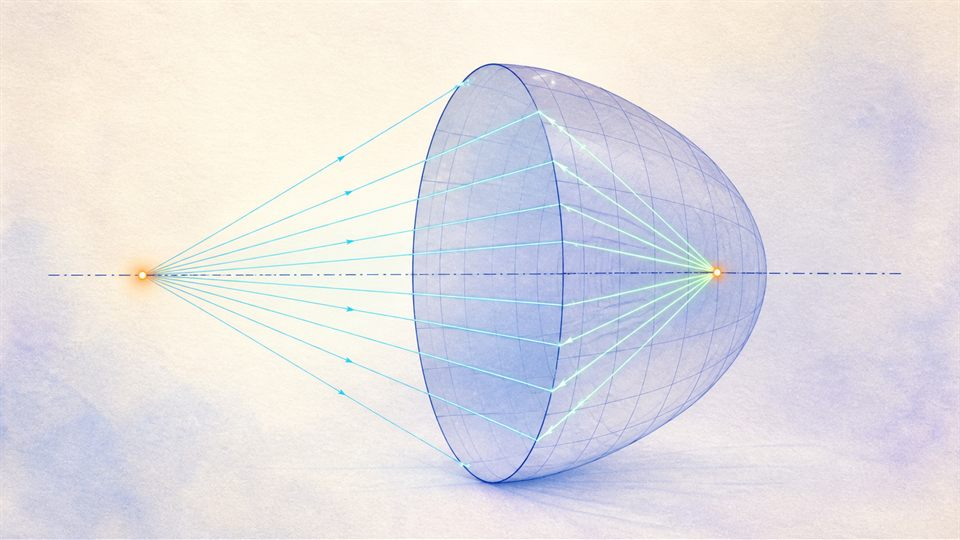
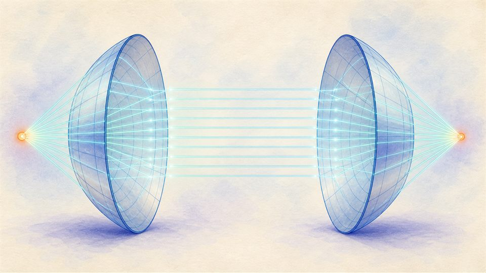
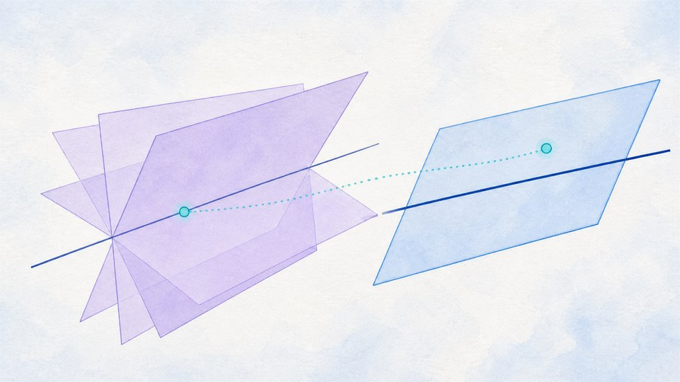
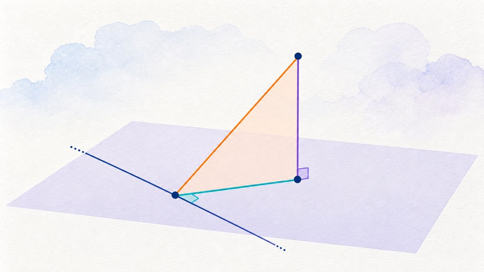

Geometry
기하 웹앱
도형의 성질, 벡터의 움직임, 공간좌표의 관계를 눈으로 확인합니다.
이차곡선

원뿔을 잘라보면? 이차곡선 탐구
원뿔을 자르는 각도와 높이에 따라 원·타원·포물선·쌍곡선이 만들어지는 과정을 3D로 보고, 단델린 구로 초점의 정체를 증명합니다.

이차곡선 반사 실험실
이심률 하나로 원·타원·포물선·쌍곡선을 이으며, 초점에서 나온 빛이 반사되어 모이거나 흩어지는 과정을 표준형과 연속 변형 두 관점으로 탐구합니다.

이차곡선 반사 실험실 3D
이차곡선을 초점을 포함한 축으로 회전시킨 곡면(구·회전타원면·회전포물면·회전쌍곡면)에서, 초점에서 나온 빛이 3차원 공간 전체에서 어떻게 모이거나 흩어지는지 직접 회전시켜 확인합니다.

쌍둥이 곡면 반사 실험실 3D
마주 보는 두 곡면 거울 사이에서 빛이 어떻게 이어지는지 봅니다. 포물면은 간격을 아무리 벌려도 평행광이 그대로 건너가 반대쪽 초점에 모이고, 쌍곡면은 한 방정식이 만드는 두 가지가 먼 곳에서 온 빛을 한 번 반사해 초점으로 보냅니다 — 반사망원경이 함께 쓰는 두 구성입니다.
공간도형과 공간좌표
평면의 결정

평면은 언제 하나로 결정될까?
세 점, 한 직선과 한 점, 두 직선의 여러 위치 관계를 3D로 비교하며 평면이 하나로 결정되는 조건과 결정되지 않거나 공통 평면이 없는 경우를 탐구합니다.

삼수선 정리 정사영 수선 탐구실
높은 점에서 바닥 기준선에 수직인 지지대를 설치하는 상황을 정사영으로 바꾸어, 세 정리의 조건을 하나씩 확보하고 하나씩 깨 본 뒤 교과서 증명 네 단계를 3차원에서 그대로 따라갑니다.